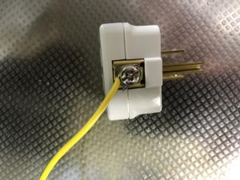

うるがいの話 ある日
最新: アマゾンから質問うるがいとは 前提知識です
カニの画像をクリックすると『うるがいの話』サイトを表示します|
|
【うるがいの話】 うるがい(ｳﾙｶﾞｲ urugai)とは、『もずくがに』の名前でとても大きくなります。 |
|---|---|
|
|
【Got cat カミマヤーの話】 たながー（ﾀﾅｶﾞｰtanagaa）とは手長えびのことで、何種類かあり大きいのは車 エビぐらいになります。 |

|
【ぶながぁの話】 ぶながー(bunagaa)とは、赤い髪の毛、赤い身体、そして身長は１ｍ２０ｃｍ ぐらい、川の蟹を食べているの目撃された。場所は沖縄県国頭郡大宜味村のと ある村僕の隣近所に住んでいる爺さんから、聞いた話です。 |
|
|
【ギーマの話】 ギーマ(giima)とは、山原の里山に咲くスズランに似た、 花を付けます。実は食べられます、 気が付くと口の周りが紫になっています。 |
2021年10月05日 (火）アマゾンから質問
17:10

この前、電子レンジのアース線を繋げるための『アースターミナル付変換アダ
プタ』を購入したら、アマゾンから質問のメールが来た。
”Ｙ字のアース線を取り付けたくて購入しましたが、ネジを緩めて差し込めば
いいのでしょうか？ネジが緩まず困っています。”
回答するための回答サイトへ行くと動画があればいいですとあったので、写真
を撮ってそれを動画にして（変ではあるが、画像添付は出来ない）回答した。
ネジを緩めることが出来るドラーバーを捜してください
ネジを緩めないとアース線を接続できません。
私の場合は、裸の線をそのまま繋げましたが
Y字型の場合はゆるめたネジの間に突っ込んで
しっかりネジを絞めてください
以上
別の人の回答、こっちの方が妥当かな
アース端子の取付ネジが回らない場合は、ネジの不良と思われます。
交換が必要です。